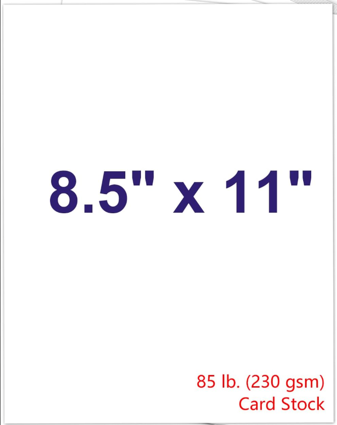

Pick da Poster, Print da Poster, Post da Poster
The what and the why:I have found posters in-real-life to get engagement and follow up. They communicate that your neighbor cares enough about something to hang up a poster about it. Our something is getting progressives out to vote, and spreading true information about Susan Collins and Troy Jackson to allow our neighbors to make an informed choice!
The Posters:
Poster XX

Poster XX
Poster XX
Poster XX
Poster XX
Interdum et malesuada fames ac ante ipsum primis in faucibus.
Quisque vel mauris libero. Cras tortor nunc, facilisis vel consequat quis,
malesuada sed risus. In hac habitasse platea dictumst. Sed viverra vitae elit
nec feugiat. Sed tincidunt ac diam a faucibus. In interdum odio a lacus
hendrerit, at congue sapien venenatis. Donec interdum placerat ex. Sed sed
egestas quam, ut rutrum diam. Donec scelerisque maximus neque et euismod.
Curabitur eget turpis libero. Donec ornare pharetra nisi. Curabitur quis
tellus sed lorem placerat fringilla in ac nulla. Nulla rutrum nulla urna,
nec interdum erat pellentesque id. Etiam volutpat magna
elit, ac posuere tellus porttitor non.
Praesent viverra purus at dui ullamcorper, in commodo quam hendrerit.
- Mango
- Mangoo
- Mangoo
- Mangoo
- Mango
- Mangoo
- Mangoo
- Mangoo